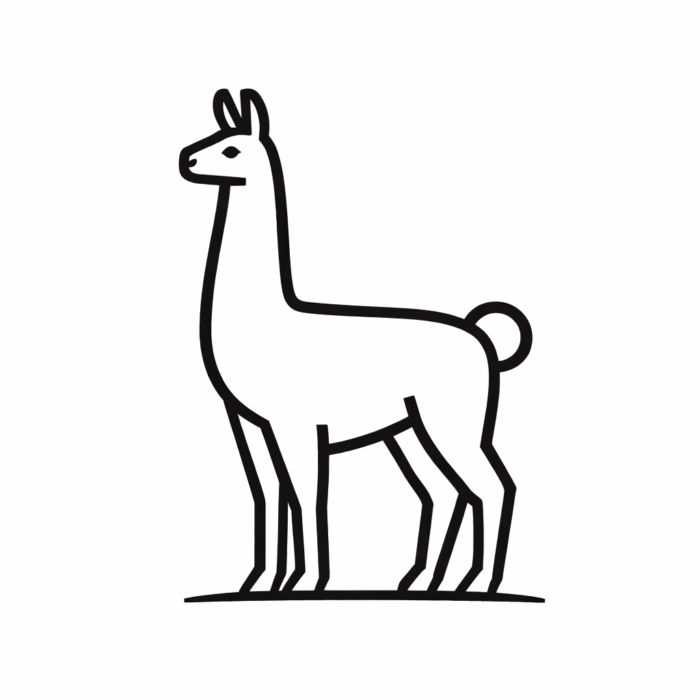

PampaR is a language model architecture inspired by the functional organization of the human brain. Unlike standard transformers that treat all computations uniformly, PampaR introduces Territorial Processing where specialized neural modules are organized into functional territories coordinated by a central Thalamus that routes tokens using a hybrid approach: 70% explicit rules (LLAVES) and 30% learned attention.
PampaR organizes computation into 4 functional territories, each containing specialized modules:
| Territory | Modules | Function | Brain Analogy |
|---|---|---|---|
| Expresivo | Language, Creativity | Fluent text generation, novel ideas | Broca's area, Right hemisphere |
| Contextual | Context | Working memory, coherence | Hippocampus, Prefrontal cortex |
| Formal | Logic | Deductive reasoning, rules | Prefrontal cortex |
| Estructural | Patterns, Mathematics | Sequences, numbers, structure | Parietal lobe |
LLAVES (Spanish for "keys") are explicit, interpretable routing rules based on token patterns:
| Module | Activation Patterns |
|---|---|
| Language | "the", "a", "of", "that", articles, prepositions |
| Mathematics | digits 0-9, "+", "-", "=", "%", operators |
| Logic | "if", "then", "because", "therefore" |
| Patterns | repetitions, sequences, regular structures |
| Context | pronouns, references, temporal markers |
| Creativity | adjectives, metaphors, novel combinations |
The routing formula combines rules with learning:
routing_weights = λ × LLAVES_activation + (1 - λ) × learned_attention where λ = 0.7Territories communicate via 6 bidirectional frontier connections with learned gates:
| Connection | Weight | Function |
|---|---|---|
| Expresivo ↔ Contextual | 0.8 (High) | Narrative needs context |
| Expresivo ↔ Formal | 0.5 (Medium) | Structured argumentation |
| Expresivo ↔ Estructural | 0.4 (Low) | Creative structure |
| Contextual ↔ Formal | 0.6 (Medium-high) | Logical context |
| Contextual ↔ Estructural | 0.5 (Medium) | Patterns in context |
| Formal ↔ Estructural | 0.7 (High) | Mathematical logic |
| Parameter | Value |
|---|---|
| Total Parameters | 14M |
| Hidden Dimension | 256 |
| Attention Heads | 8 |
| Territorial Blocks | 6 |
| Context Length | 512 tokens |
| Vocabulary | 32K (BPE) |
| Training | Value |
|---|---|
| Dataset | WikiText-103 |
| Hardware | GTX 1650 (4GB) |
| Optimizer | AdamW |
| Learning Rate | 3e-4 |
| Precision | FP16 mixed |
| Training Time | ~8 hours |
| Model | Parameters | PPL ↓ | Year |
|---|---|---|---|
| LSTM (Merity et al.) | 24M | 69.1 | 2018 |
| Transformer-XL Small | 24M | 54.5 | 2019 |
| PampaR v9 | 14M | ~45 | 2026 |
| GPT-2 Small | 125M | 35.1 | 2019 |
GitHub: github.com/lucasmella-stack/PAMPAr-o1
HuggingFace: huggingface.co/lucasmella-stack/PAMPAr-o1